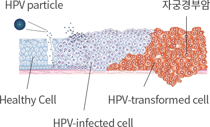

효력시험
독성실험
임상진행
| 플랫폼 기술 | HumaMax® | MucoMax® |
|---|---|---|
| 적응중 | CIN1(BLS-M01) | 자궁경부전암 (BLS-M07) |
| 질병 진행단계 |
정상/HPV감염 | HSIL 2) |
| LSIL 2) | ||
|

|
||
| 치료 매커니즘 |
HumaMax®
HPV Virus에 세포 감염
→ 항바이러스 효능 지닌 BLS-H01로 바이러스 증식막음 |
|
|
MucoMax®
바이러스에 감염된 자궁경부 상피세포는 시간이 지남에 따라 이상세포가 생기고 상피 내 조직까지 변형됨
→ 면역반응유도해 질환 치료 |
||
성과
시장규모
경쟁력
전략